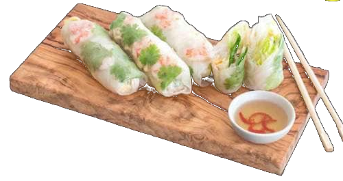
1. Fresh Roll 2ks4
Čerstvé závitky, rýžové nudle, ledový salát, mango, okurka, mrkev, bylinky, chia, sladko-kyselá omáčka.
- s krevetami70 kč
- s hovězím masem70 kč
- s tofu60 kč
Závitky, krevety a dim sum na začátek.

Čerstvé závitky, rýžové nudle, ledový salát, mango, okurka, mrkev, bylinky, chia, sladko-kyselá omáčka.
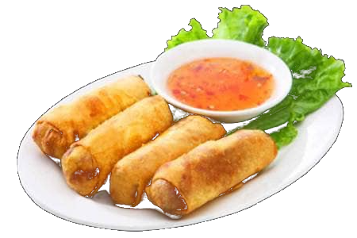
Jarní závitky, skleněné nudle, mrkev, zell, kurkuma, relish omáčka - sojová omáčka
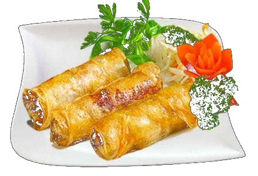
Zeli, vepřové mleté maso, skleněné nudle, cibule, shiitake, mrkev, sladko-kyselá omáčka
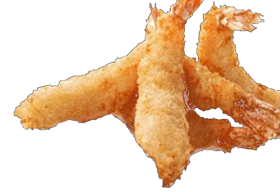
Křupavé krevety, sladká čili omáčka.
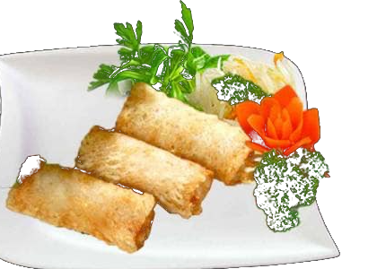
Krevety, mrkev, shiitake, taro, cibule, sládké chili omáčka
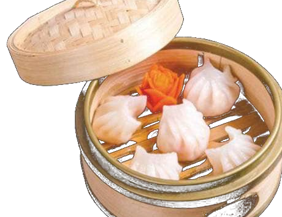
Vývary tažené přes noc, thajské i kokosové.
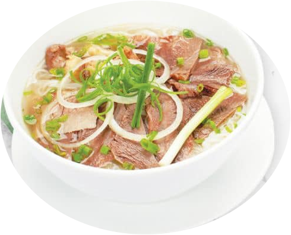
Vývar, rýžové nudle, koriandr, jarni cibulka, červené cibule
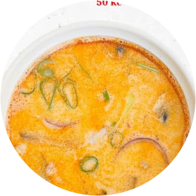
Tom Yam pasta, kokosové mléko, citronová tráva, galangal, houby, cibule, listek z limetky, jarni cibule, koriandr
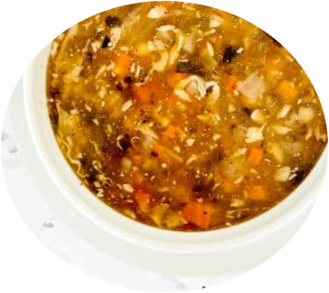
Kuře, cibule, mrkev, houby, bambusové výhonky, vejce, paprika, pepř
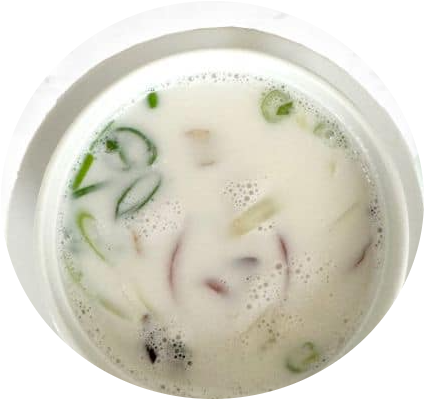
Kokosové mléko, citronová tráva, kořeni galangal, houby, kukuřice, koriandr.
Bun, pho a smažené nudle. U každého jídla si vyberete maso.
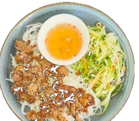
Vietnamské rýžové nudle, grilované vepřové maso, okurka, sojové kličky, mrkev, ledový salát, kodiandr, sezam, citronová tráva, sladko - kyselá rybí omáčka
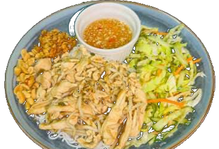
Vietnamské rýžové nudle, ledový salát, okurka, sojové kličky, mrkev, kodiandr, arašidy, smažené cibule, ústřicová omáčka, sladko - kyselá rybí omáčka
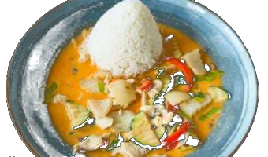
Červená paprika, cuketa, mrkev, pórek, čínské zelí, cibule, limetka, červená curry pasta, rybí omáčka, cukr, kokosové mléko.
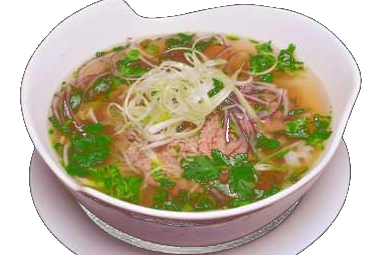
Vývar, rýžové nudle, jarni cibulka, kodiandr, červená cibule, chilli, sójové kličky, citron
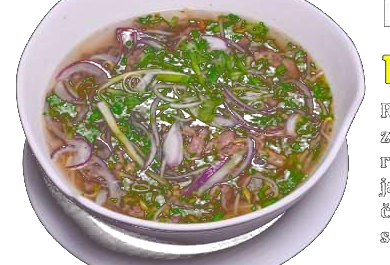
Restované hovězí maso, zázvor, hovězí vývar, rýžové nudle, jarnl cibulka, kodiandr, červená cibule, chilli, sójové kličky, citron
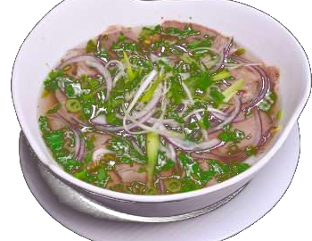
Syrové hovězí maso, hovězí vývar, rýžové nudle, jarní cibulka, kodiandr, červená cibule, chilli, sójové kličky, citron, zázvor
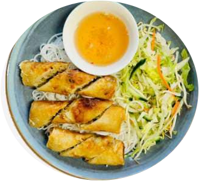
Nem Ran Rolls, rýžové nudle, okurka, sojové kličky, mrkev, ledový salát, kodiandr, sladko - kyselá rybí omáčka
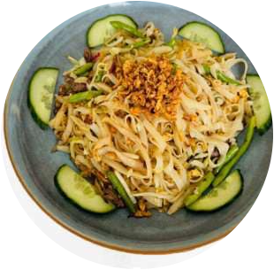
Smažené rýžové nudle, pak choy, rajčata, červené cibule, lusky, smažené cibule, vejce
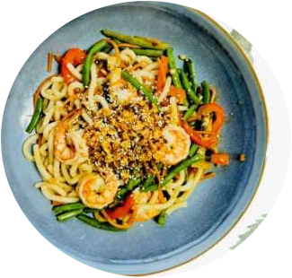
Japanské nudle udon, paprika, lusky, mrkev, žampiony, chili, sezam, smažené cibule, ústřicová omáčka
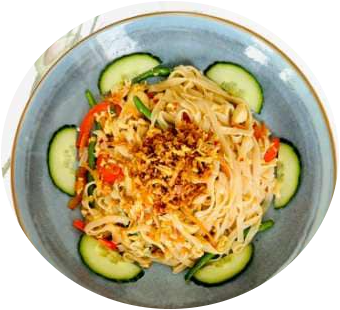
Thajské nudle, vejce, mrkev, paprika, lusky, chilli, ústřicová omáčka
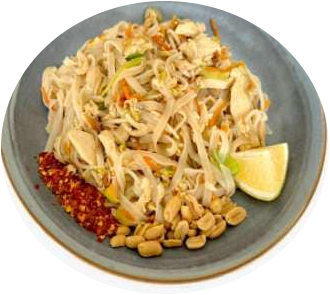
Thajské nudle, vejce, mrkev, pórek, sójové kličky, arašidy, chilli, citron, tamarind ústřicová omáčka.
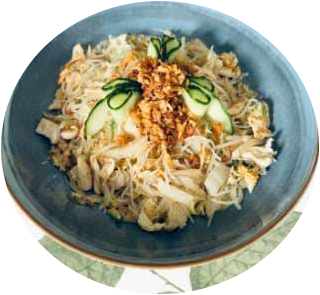
Smažené rýžové nudle, vejce, pak choy, mrkev, sójové kličky, červná cibule, smažené cibule, rybi omáčka.
Smažená rýže z rozpálené pánve.
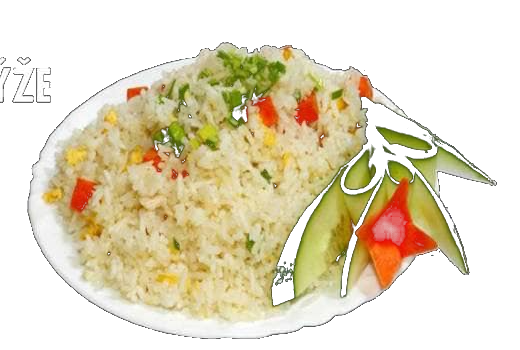
Smažená rýže, mladé ryže, kokos, lusky, kukuřice, vejce, porek, mrkev
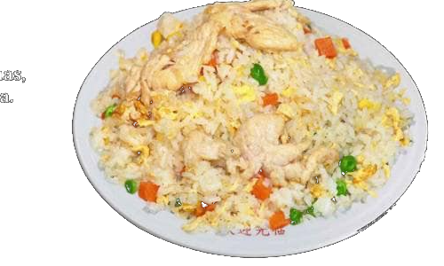
Smažená rýže, cuketa, sójové klíčky, smažená cibule, ananas, paprika, vejce, kurkuma, červená cibule, ústřicová omáčka.
Wok, kachna a křupavá klasika s rýží nebo hranolky.
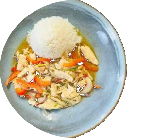
Kuřecí maso, červená paprika, citronová tráva, chilli, ústřicová omáčka, česnek
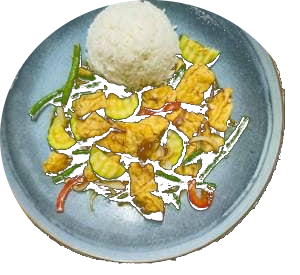
Tofu, mrkev, červené cibule, lusky, sójové kličky, pakchoy, cuketa
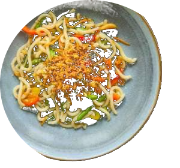
Japonské nudle udon, mrkev, mořské řasy, žampiony, shiitake, sezam, lusky, smažená cibule
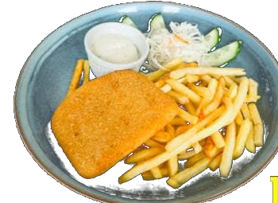
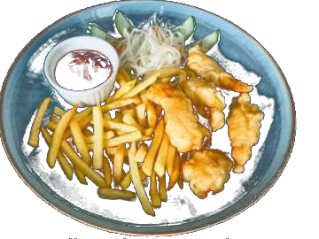
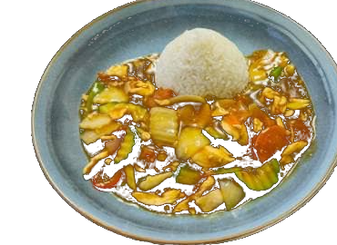
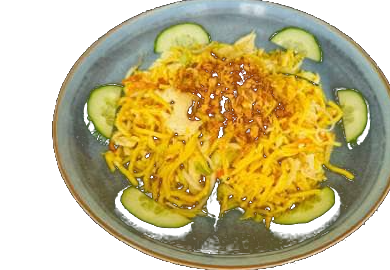
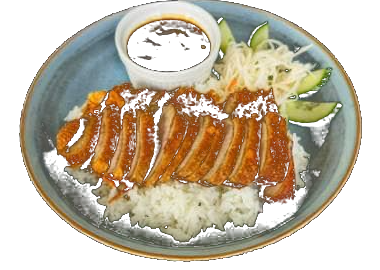
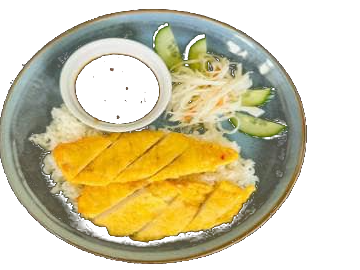
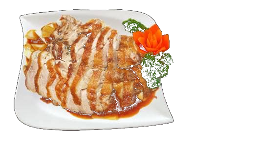
Čísla u názvů jídel odpovídají směrnici 1169/2011 EU.